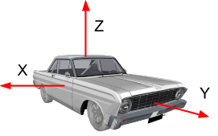

In this document
This section describes sensor axes, base sensors, and composite sensors (activity, attitude, uncalibrated, and interaction).
Sensor axes
Sensor event values from many sensors are expressed in a specific frame that is static relative to the device.
Mobile device axes
The Sensor API is relative only to the natural orientation of the screen (axes are not swapped when the device's screen orientation changes.

Figure 1. Coordinate system (relative to a mobile device) used by the Sensor API.
Automotive axes
In Android Automotive implementations, axes are defined with respect to the vehicle body frame:
Figure 2. Coordinate system (relative to an automotive device) used by the Sensor API.
- X increases towards the right of the vehicle
- Y increases towards the nose of the body frame
- Z increases towards the roof of the body frame
When looking from the positive direction of an axis, positive rotations are counterclockwise. Thus, when a vehicle is making a left turn, the z-axis gyroscope rate of turn is expected to be a positive value.
Base sensors
Base sensor types are named after the physical sensors they represent. These sensors relay data from a single physical sensor (as opposed to composite sensors that generate data out of other sensors). Examples of base sensor types include:
SENSOR_TYPE_ACCELEROMETERSENSOR_TYPE_GYROSCOPESENSOR_TYPE_MAGNETOMETER
Note: For details on each Android sensor type, review the following sections.
However, base sensors are not equal to and should not be confused with their underlying physical sensor. The data from a base sensor is not the raw output of the physical sensor because corrections (such as bias compensation and temperature compensation) are applied.
For example, the characteristics of a base sensor might be different from the characteristics of its underlying physical sensor in the following use cases:
- A gyroscope chip rated to have a bias range of 1 deg/sec.
- After factory calibration, temperature compensation and bias compensation are applied, the actual bias of the Android sensor will be reduced, may be to a point where the bias is guaranteed to be below 0.01deg/sec.
- In this situation, we say that the Android sensor has a bias below 0.01 deg/sec, even though the data sheet of the underlying sensor said 1 deg/sec.
- A barometer with a power consumption of 100uW.
- Because the generated data needs to be transported from the chip to the SoC, the actual power cost to gather data from the barometer Android sensor might be much higher, for example 1000uW.
- In this situation, we say that the Android sensor has a power consumption of 1000uW, even though the power consumption measured at the barometer chip leads is 100uW.
- A magnetometer that consumes 100uW when calibrated, but consumes more when
calibrating.
- Its calibration routine might require activating the gyroscope, consuming 5000uW, and running some algorithm, costing another 900uW.
- In this situation, we say that the maximum power consumption of the (magnetometer) Android sensor is 6000uW.
- In this case, the average power consumption is the more useful measure, and it is what is reported in the sensor static characteristics through the HAL.
Accelerometer
Reporting-mode: Continuous
getDefaultSensor(SENSOR_TYPE_ACCELEROMETER) returns a non-wake-up sensor
An accelerometer sensor reports the acceleration of the device along the 3 sensor axes. The measured acceleration includes both the physical acceleration (change of velocity) and the gravity. The measurement is reported in the x, y and z fields of sensors_event_t.acceleration.
All values are in SI units (m/s^2) and measure the acceleration of the device minus the force of gravity along the 3 sensor axes.
Here are examples:
- The norm of (x, y, z) should be close to 0 when in free fall.
- When the device lies flat on a table and is pushed on its left side toward the right, the x acceleration value is positive.
- When the device lies flat on a table, the acceleration value along z is +9.81 alo, which corresponds to the acceleration of the device (0 m/s^2) minus the force of gravity (-9.81 m/s^2).
- When the device lies flat on a table and is pushed toward the sky, the acceleration value is greater than +9.81, which corresponds to the acceleration of the device (+A m/s^2) minus the force of gravity (-9.81 m/s^2).
The readings are calibrated using:
- temperature compensation
- online bias calibration
- online scale calibration
The bias and scale calibration must only be updated while the sensor is deactivated, so as to avoid causing jumps in values during streaming.
The accelerometer also reports how accurate it expects its readings to be
through sensors_event_t.acceleration.status. See the SensorManager’s
SENSOR_STATUS_* constants for more information on possible values for this field.
Ambient temperature
Reporting-mode: On-change
getDefaultSensor(SENSOR_TYPE_AMBIENT_TEMPERATURE) returns a non-wake-up sensor
This sensor provides the ambient (room) temperature in degrees Celsius.
Magnetic field sensor
Reporting-mode: Continuous
getDefaultSensor(SENSOR_TYPE_MAGNETIC_FIELD) returns a non-wake-up sensor
SENSOR_TYPE_GEOMAGNETIC_FIELD == SENSOR_TYPE_MAGNETIC_FIELD
A magnetic field sensor (also known as magnetometer) reports the ambient magnetic field, as measured along the 3 sensor axes.
The measurement is reported in the x, y and z fields of
sensors_event_t.magnetic and all values are in micro-Tesla (uT).
The magnetometer also reports how accurate it expects its readings to be
through sensors_event_t.magnetic.status. See the SensorManager’s
SENSOR_STATUS_* constants for more information on possible values for this field.
The readings are calibrated using:
- temperature compensation
- factory (or online) soft-iron calibration
- online hard-iron calibration
Gyroscope
Reporting-mode: Continuous
getDefaultSensor(SENSOR_TYPE_GYROSCOPE) returns a non-wake-up sensor
A gyroscope sensor reports the rate of rotation of the device around the 3 sensor axes.
Rotation is positive in the counterclockwise direction (right-hand rule). That is, an observer looking from some positive location on the x, y or z axis at a device positioned on the origin would report positive rotation if the device appeared to be rotating counter clockwise. Note that this is the standard mathematical definition of positive rotation and does not agree with the aerospace definition of roll.
The measurement is reported in the x, y and z fields of sensors_event_t.gyro
and all values are in radians per second (rad/s).
The readings are calibrated using:
- temperature compensation
- factory (or online) scale compensation
- online bias calibration (to remove drift)
The gyroscope also reports how accurate it expects its readings to be through
sensors_event_t.gyro.status. See the SensorManager’s
SENSOR_STATUS_* constants for more information on possible values for this field.
The gyroscope cannot be emulated based on magnetometers and accelerometers, as this would cause it to have reduced local consistency and responsiveness. It must be based on a usual gyroscope chip.
Heart Rate
Reporting-mode: On-change
getDefaultSensor(SENSOR_TYPE_HEART_RATE) returns a non-wake-up sensor
A heart rate sensor reports the current heart rate of the person touching the device.
The current heart rate in beats per minute (BPM) is reported in
sensors_event_t.heart_rate.bpm and the status of the sensor is reported in
sensors_event_t.heart_rate.status. See the SensorManager’s
SENSOR_STATUS_* constants for more information on possible values for this field. In
particular, upon the first activation, unless the device is known to not be on
the body, the status field of the first event must be set to
SENSOR_STATUS_UNRELIABLE. Because this sensor is on-change,
events are generated when and only when heart_rate.bpm or
heart_rate.status have changed since the last event. The events
are generated no faster than every sampling_period.
sensor_t.requiredPermission is always SENSOR_PERMISSION_BODY_SENSORS.
Light
Reporting-mode: On-change
getDefaultSensor(SENSOR_TYPE_LIGHT) returns a non-wake-up sensor
A light sensor reports the current illumination in SI lux units.
The measurement is reported in sensors_event_t.light.
Proximity
Reporting-mode: On-change
Usually defined as a wake-up sensor
getDefaultSensor(SENSOR_TYPE_PROXIMITY) returns a wake-up sensor
A proximity sensor reports the distance from the sensor to the closest visible surface.
Up to Android KitKat, the proximity sensors were always wake-up sensors, waking up the SoC when detecting a change in proximity. After Android KitKat, we advise to implement the wake-up version of this sensor first, as it is the one that is used to turn the screen on and off while making phone calls.
The measurement is reported in centimeters in sensors_event_t.distance. Note
that some proximity sensors only support a binary "near" or "far" measurement.
In this case, the sensor report its sensor_t.maxRange value in the "far" state
and a value less than sensor_t.maxRange in the "near" state.
Pressure
Reporting-mode: Continuous
getDefaultSensor(SENSOR_TYPE_PRESSURE) returns a non-wake-up sensor
A pressure sensor (also known as barometer) reports the atmospheric pressure in hectopascal (hPa).
The readings are calibrated using
- temperature compensation
- factory bias calibration
- factory scale calibration
The barometer is often used to estimate elevation changes. To estimate absolute elevation, the sea-level pressure (changing depending on the weather) must be used as a reference.
Relative humidity
Reporting-mode: On-change
getDefaultSensor(SENSOR_TYPE_RELATIVE_HUMIDITY) returns a non-wake-up sensor
A relative humidity sensor measures relative ambient air humidity and returns a value in percent.
Composite sensor types
A composite sensor generates data by processing and/or fusing data from one or several physical sensors. (Any sensor that is not a base sensor is called a composite sensor.) Examples of composite sensors include:
- Step detector and Significant motion, which are usually based on an accelerometer, but could be based on other sensors as well, if the power consumption and accuracy was acceptable.
- Game rotation vector, based on an accelerometer and a gyroscope.
- Uncalibrated gyroscope, which is similar to the gyroscope base sensor, but with the bias calibration being reported separately instead of being corrected in the measurement.
As with base sensors, the characteristics of the composite sensors come from the characteristics of their final data. For example, the power consumption of a game rotation vector is probably equal to the sum of the power consumptions of the accelerometer chip, the gyroscope chip, the chip processing the data, and the buses transporting the data. As another example, the drift of a game rotation vector depends as much on the quality of the calibration algorithm as on the physical sensor characteristics.
The following table lists available composite sensor types. Each composite sensor relies on data from one or several physical sensors. Avoid choosing other underlying physical sensors to approximate results as they provide a poor user experience.
Note: When there is no gyroscope on the device (and only when there is no gyroscope), you may implement the rotation vector, linear acceleration, and gravity sensors without using the gyroscope.
| Sensor type | Category | Underlying physical sensors | Reporting mode |
|---|---|---|---|
Attitude |
Accelerometer, Gyroscope MUST NOT USE Magnetometer |
Continuous |
|
Attitude |
Accelerometer, Magnetometer, MUST NOT USE Gyroscope |
Continuous |
|
| Glance gesture | Interaction |
Undefined |
One-shot |
Attitude |
Accelerometer, Gyroscope |
Continuous |
|
Uncalibrated |
Gyroscope |
Continuous |
|
Activity |
Accelerometer, Gyroscope (if present) or Magnetometer (if gyro not present) |
Continuous |
|
Uncalibrated |
Magnetometer |
Continuous |
|
Orientation (deprecated) |
Attitude |
Accelerometer, Magnetometer PREFERRED Gyroscope |
Continuous |
Interaction |
Undefined |
One-shot |
|
Attitude |
Accelerometer, Magnetometer, AND (when present) Gyroscope |
Continuous |
|
Activity |
Accelerometer (or another as long as very low power) |
One-shot |
|
Activity |
Accelerometer |
On-change |
|
Activity |
Accelerometer |
Special |
|
Activity |
Accelerometer |
Special |
|
Interaction |
Undefined |
One-shot |
= Low power sensor
Activity composite sensors
Linear acceleration
Underlying physical sensors: Accelerometer and (if present) Gyroscope (or magnetometer if gyroscope not present)
Reporting-mode: Continuous
getDefaultSensor(SENSOR_TYPE_LINEAR_ACCELERATION) returns a non-wake-up sensor
A linear acceleration sensor reports the linear acceleration of the device in the sensor frame, not including gravity.
The output is conceptually: output of the accelerometer minus the output of the gravity sensor. It is reported in m/s^2 in the x, y and z
fields of sensors_event_t.acceleration.
Readings on all axes should be close to 0 when the device is immobile.
If the device possesses a gyroscope, the linear acceleration sensor must use the gyroscope and accelerometer as input.
If the device doesn’t possess a gyroscope, the linear acceleration sensor must use the accelerometer and the magnetometer as input.
Significant motion
Underlying physical sensor: Accelerometer (or another as long as low power)
Reporting-mode: One-shot
Low-power
Implement only the wake-up version of this sensor.
getDefaultSensor(SENSOR_TYPE_SIGNIFICANT_MOTION) returns a wake-up sensor
A significant motion detector triggers when the detecting a “significant motion”: a motion that might lead to a change in the user location.
Examples of such significant motions are:
- walking or biking
- sitting in a moving car, coach or train
Examples of situations that do not trigger significant motion:
- phone in pocket and person is not moving
- phone is on a table and the table shakes a bit due to nearby traffic or washing machine
At the high level, the significant motion detector is used to reduce the power consumption of location determination. When the localization algorithms detect that the device is static, they can switch to a low power mode, where they rely on significant motion to wake the device up when the user is changing location.
This sensor must be low power. It makes a tradeoff for power consumption that may result in a small amount of false negatives. This is done for a few reasons:
- The goal of this sensor is to save power.
- Triggering an event when the user is not moving (false positive) is costly in terms of power, so it should be avoided.
- Not triggering an event when the user is moving (false negative) is acceptable as long as it is not done repeatedly. If the user has been walking for 10 seconds, not triggering an event within those 10 seconds is not acceptable.
Each sensor event reports 1 in sensors_event_t.data[0]
Step detector
Underlying physical sensor: Accelerometer (+ possibly others as long as low power)
Reporting-mode: Special (one event per step taken)
Low-power
getDefaultSensor(SENSOR_TYPE_STEP_DETECTOR) returns a non-wake-up sensor
A step detector generates an event each time a step is taken by the user.
The timestamp of the event sensors_event_t.timestamp corresponds to when the
foot hit the ground, generating a high variation in acceleration.
Compared to the step counter, the step detector should have a lower latency (less than 2 seconds). Both the step detector and the step counter detect when the user is walking, running and walking up the stairs. They should not trigger when the user is biking, driving or in other vehicles.
This sensor must be low power. That is, if the step detection cannot be done in hardware, this sensor should not be defined. In particular, when the step detector is activated and the accelerometer is not, only steps should trigger interrupts (not every accelerometer reading).
sampling_period_ns has no impact on step detectors.
Each sensor event reports 1 in sensors_event_t.data[0]
Step counter
Underlying physical sensor: Accelerometer (+ possibly others as long as low power)
Reporting-mode: On-change
Low-power
getDefaultSensor(SENSOR_TYPE_STEP_COUNTER) returns a non-wake-up sensor
A step counter reports the number of steps taken by the user since the last reboot while activated.
The measurement is reported as a uint64_t in
sensors_event_t.step_counter and
is reset to zero only on a system reboot.
The timestamp of the event is set to the time when the last step for that event was taken.
See the Step detector sensor type for the signification of the time of a step.
Compared to the step detector, the step counter can have a higher latency (up to 10 seconds). Thanks to this latency, this sensor has a high accuracy; the step count after a full day of measures should be within 10% of the actual step count. Both the step detector and the step counter detect when the user is walking, running and walking up the stairs. They should not trigger when the user is biking, driving or in other vehicles.
The hardware must ensure the internal step count never overflows. The minimum size of the hardware's internal counter shall be 16 bits. In case of imminent overflow (at most every ~2^16 steps), the SoC can be woken up so the driver can do the counter maintenance.
As stated in Interaction, while this sensor operates, it shall not disrupt any other sensors, in particular, the accelerometer, which might very well be in use.
If a particular device cannot support these modes of operation, then this sensor type must not be reported by the HAL. ie: it is not acceptable to "emulate" this sensor in the HAL.
This sensor must be low power. That is, if the step detection cannot be done in hardware, this sensor should not be defined. In particular, when the step counter is activated and the accelerometer is not, only steps should trigger interrupts (not accelerometer data).
Tilt detector
Underlying physical sensor: Accelerometer (+ possibly others as long as low power)
Reporting-mode: Special
Low-power
Implement only the wake-up version of this sensor.
getDefaultSensor(SENSOR_TYPE_TILT_DETECTOR) returns a wake-up sensor
A tilt detector generates an event each time a tilt event is detected.
A tilt event is defined by the direction of the 2-seconds window average gravity changing by at least 35 degrees since the activation or the last event generated by the sensor. Here is the algorithm:
-
reference_estimated_gravity= average of accelerometer measurements over the first second after activation or the estimated gravity when the last tilt event was generated. -
current_estimated_gravity= average of accelerometer measurements over the last 2 seconds. - trigger when
angle(reference_estimated_gravity, current_estimated_gravity) > 35 degrees
Large accelerations without a change in phone orientation should not trigger a
tilt event. For example, a sharp turn or strong acceleration while driving a
car should not trigger a tilt event, even though the angle of the average
acceleration might vary by more than 35 degrees.
Typically, this sensor is
implemented with the help of only an accelerometer. Other sensors can be used
as well if they do not increase the power consumption significantly. This is a
low power sensor that should allow the SoC to go into suspend mode. Do not
emulate this sensor in the HAL. Each sensor event reports 1 in
sensors_event_t.data[0].
Attitude composite sensors
Rotation vector
Underlying physical sensors: Accelerometer, Magnetometer, and Gyroscope
Reporting-mode: Continuous
getDefaultSensor(SENSOR_TYPE_ROTATION_VECTOR) returns a non-wake-up sensor
A rotation vector sensor reports the orientation of the device relative to the East-North-Up coordinates frame. It is usually obtained by integration of accelerometer, gyroscope, and magnetometer readings. The East-North-Up coordinate system is defined as a direct orthonormal basis where:
- X points east and is tangential to the ground.
- Y points north and is tangential to the ground.
- Z points towards the sky and is perpendicular to the ground.
The orientation of the phone is represented by the rotation necessary to align the East-North-Up coordinates with the phone's coordinates. That is, applying the rotation to the world frame (X,Y,Z) would align them with the phone coordinates (x,y,z).
The rotation can be seen as rotating the phone by an angle theta around an axis rot_axis to go from the reference (East-North-Up aligned) device orientation to the current device orientation. The rotation is encoded as the four unit-less x, y, z, w components of a unit quaternion:
-
sensors_event_t.data[0] = rot_axis.x*sin(theta/2) -
sensors_event_t.data[1] = rot_axis.y*sin(theta/2) -
sensors_event_t.data[2] = rot_axis.z*sin(theta/2) -
sensors_event_t.data[3] = cos(theta/2)
Where:
- the x, y and z fields of
rot_axisare the East-North-Up coordinates of a unit length vector representing the rotation axis -
thetais the rotation angle
The quaternion is a unit quaternion: it must be of norm 1. Failure to ensure this will cause erratic client behaviour.
In addition, this sensor reports an estimated heading accuracy:
sensors_event_t.data[4] = estimated_accuracy (in radians)
The heading error must be less than estimated_accuracy 95% of
the time. This sensor must use a gyroscope as the main orientation change input.
This sensor also uses accelerometer and magnetometer input to make up for gyroscope drift, and it cannot be implemented using only the accelerometer and magnetometer.
Game rotation vector
Underlying physical sensors: Accelerometer and Gyroscope (no Magnetometer)
Reporting-mode: Continuous
getDefaultSensor(SENSOR_TYPE_GAME_ROTATION_VECTOR) returns a non-wake-up sensor
A game rotation vector sensor is similar to a rotation vector sensor but not using the geomagnetic field. Therefore the Y axis doesn't point north but instead to some other reference. That reference is allowed to drift by the same order of magnitude as the gyroscope drifts around the Z axis.
See the Rotation vector sensor for details on
how to set sensors_event_t.data[0-3]. This sensor does
not report an estimated heading accuracy:
sensors_event_t.data[4] is reserved and should be set to 0.
In an ideal case, a phone rotated and returned to the same real-world orientation should report the same game rotation vector.
This sensor must be based on a gyroscope and an accelerometer. It cannot use magnetometer as an input, besides, indirectly, through estimation of the gyroscope bias.
Gravity
Underlying physical sensors: Accelerometer and (if present) Gyroscope (or magnetometer if gyroscope not present)
Reporting-mode: Continuous
getDefaultSensor(SENSOR_TYPE_GRAVITY) returns a non-wake-up sensor
A gravity sensor reports the direction and magnitude of gravity in the device's coordinates.
The gravity vector components are reported in m/s^2 in the x, y and z fields of
sensors_event_t.acceleration.
When the device is at rest, the output of the gravity sensor should be identical to that of the accelerometer. On Earth, the magnitude is around 9.8 m/s^2.
If the device possesses a gyroscope, the gravity sensor must use the gyroscope and accelerometer as input.
If the device doesn’t possess a gyroscope, the gravity sensor must use the accelerometer and the magnetometer as input.
Geomagnetic rotation vector
Underlying physical sensors: Accelerometer and Magnetometer (no Gyroscope)
Reporting-mode: Continuous
Low-power
getDefaultSensor(SENSOR_TYPE_GEOMAGNETIC_ROTATION_VECTOR) returns a non-wake-up sensor
A geomagnetic rotation vector is similar to a rotation vector sensor but using a magnetometer and no gyroscope.
This sensor must be based on a magnetometer. It cannot be implemented using a gyroscope, and gyroscope input cannot be used by this sensor.
See the Rotation vector sensor for details on
how to set sensors_event_t.data[0-4].
Just like for the rotation vector sensor, the heading error must be less than
the estimated accuracy (sensors_event_t.data[4]) 95% of the time.
This sensor must be low power, so it has to be implemented in hardware.
Orientation (deprecated)
Underlying physical sensors: Accelerometer, Magnetometer and (if present) Gyroscope
Reporting-mode: Continuous
getDefaultSensor(SENSOR_TYPE_ORIENTATION) returns a non-wake-up sensor
Note: This is an older sensor type that has been deprecated in the Android SDK. It has been replaced by the rotation vector sensor, which is more clearly defined. Use the rotation vector sensor over the orientation sensor whenever possible.
An orientation sensor reports the attitude of the device. The measurements are
reported in degrees in the x, y and z fields of sensors_event_t.orientation:
-
sensors_event_t.orientation.x: azimuth, the angle between the magnetic north direction and the Y axis, around the Z axis (0<=azimuth<360). 0=North, 90=East, 180=South, 270=West -
sensors_event_t.orientation.y: pitch, rotation around X axis (-180<=pitch<=180), with positive values when the z-axis moves toward the y-axis. -
sensors_event_t.orientation.z: roll, rotation around Y axis (-90<=roll<=90), with positive values when the x-axis moves towards the z-axis.
Please note, for historical reasons the roll angle is positive in the clockwise direction. (Mathematically speaking, it should be positive in the counter-clockwise direction):
Figure 3. Orientation relative to a device.
This definition is different from yaw, pitch and roll used in aviation where the X axis is along the long side of the plane (tail to nose).
The orientation sensor also reports how accurate it expects its readings to be through sensors_event_t.orientation.status. See the SensorManager’s SENSOR_STATUS_* constants for more information on possible values for this field.
Uncalibrated sensors
Uncalibrated sensors provide more raw results and may include some bias but also contain fewer "jumps" from corrections applied through calibration. Some applications may prefer these uncalibrated results as smoother and more reliable. For instance, if an application is attempting to conduct its own sensor fusion, introducing calibrations can actually distort results.
Gyroscope uncalibrated
Underlying physical sensor: Gyroscope
Reporting-mode: Continuous
getDefaultSensor(SENSOR_TYPE_GYROSCOPE_UNCALIBRATED) returns a non-wake-up sensor
An uncalibrated gyroscope reports the rate of rotation around the sensor axes
without applying bias compensation to them, along with a bias estimate. All
values are in radians/second and are reported in the fields of
sensors_event_t.uncalibrated_gyro:
-
x_uncalib: angular speed (w/o drift compensation) around the X axis -
y_uncalib: angular speed (w/o drift compensation) around the Y axis -
z_uncalib: angular speed (w/o drift compensation) around the Z axis -
x_bias: estimated drift around X axis -
y_bias: estimated drift around Y axis -
z_bias: estimated drift around Z axis
Conceptually, the uncalibrated measurement is the sum of the calibrated
measurement and the bias estimate: _uncalibrated = _calibrated + _bias.
The x/y/z_bias values are expected to jump as soon as the estimate of the bias
changes, and they should be stable the rest of the time.
See the definition of the gyroscope sensor for details on the coordinate system used.
Factory calibration and temperature compensation must be applied to the
measurements. Also, gyroscope drift estimation must be implemented so that
reasonable estimates can be reported in x_bias,
y_bias and z_bias. If the
implementation is not able to estimate the drift, then this sensor must not be
implemented.
If this sensor is present, then the corresponding Gyroscope sensor must also be
present and both sensors must share the same sensor_t.name and
sensor_t.vendor values.
Magnetic field uncalibrated
Underlying physical sensor: Magnetometer
Reporting-mode: Continuous
getDefaultSensor(SENSOR_TYPE_MAGNETIC_FIELD_UNCALIBRATED) returns a non-wake-up sensor
An uncalibrated magnetic field sensor reports the ambient magnetic field
together with a hard iron calibration estimate. All values are in micro-Tesla
(uT) and are reported in the fields of sensors_event_t.uncalibrated_magnetic:
-
x_uncalib: magnetic field (w/o hard-iron compensation) along the X axis -
y_uncalib: magnetic field (w/o hard-iron compensation) along the Y axis -
z_uncalib: magnetic field (w/o hard-iron compensation) along the Z axis -
x_bias: estimated hard-iron bias along the X axis -
y_bias: estimated hard-iron bias along the Y axis -
z_bias: estimated hard-iron bias along the Z axis
Conceptually, the uncalibrated measurement is the sum of the calibrated
measurement and the bias estimate: _uncalibrated = _calibrated + _bias.
The uncalibrated magnetometer allows higher level algorithms to handle bad hard
iron estimation. The x/y/z_bias values are expected to jump as soon as the
estimate of the hard-iron changes, and they should be stable the rest of the
time.
Soft-iron calibration and temperature compensation must be applied to the
measurements. Also, hard-iron estimation must be implemented so that reasonable
estimates can be reported in x_bias, y_bias and
z_bias. If the implementation is not able to estimate the bias,
then this sensor must not be implemented.
If this sensor is present, then the corresponding magnetic field sensor must be
present and both sensors must share the same sensor_t.name and
sensor_t.vendor values.
Interaction composite sensors
Some sensors are mostly used to detect interactions with the user. We do not define how those sensors must be implemented, but they must be low power and it is the responsibility of the device manufacturer to verify their quality in terms of user experience.
Wake up gesture
Underlying physical sensors: Undefined (anything low power)
Reporting-mode: One-shot
Low-power
Implement only the wake-up version of this sensor.
getDefaultSensor(SENSOR_TYPE_WAKE_GESTURE) returns a wake-up sensor
A wake up gesture sensor enables waking up the device based on a device specific motion. When this sensor triggers, the device behaves as if the power button was pressed, turning the screen on. This behavior (turning on the screen when this sensor triggers) might be deactivated by the user in the device settings. Changes in settings do not impact the behavior of the sensor: only whether the framework turns the screen on when it triggers. The actual gesture to be detected is not specified, and can be chosen by the manufacturer of the device.
This sensor must be low power, as it is likely to be activated 24/7.
Each sensor event reports 1 in sensors_event_t.data[0].
Pick up gesture
Underlying physical sensors: Undefined (anything low power)
Reporting-mode: One-shot
Low-power
Implement only the wake-up version of this sensor.
getDefaultSensor(SENSOR_TYPE_PICK_UP_GESTURE) returns a wake-up sensor
A pick-up gesture sensor triggers when the device is picked up regardless of wherever it was before (desk, pocket, bag).
Each sensor event reports 1 in sensors_event_t.data[0].
Glance gesture
Underlying physical sensors: Undefined (anything low power)
Reporting-mode: One-shot
Low-power
Implement only the wake-up version of this sensor.
getDefaultSensor(SENSOR_TYPE_GLANCE_GESTURE) returns a wake-up sensor
A glance gesture sensor enables briefly turning the screen on to enable the user to glance content on screen based on a specific motion. When this sensor triggers, the device will turn the screen on momentarily to allow the user to glance notifications or other content while the device remains locked in a non-interactive state (dozing), then the screen will turn off again. This behavior (briefly turning on the screen when this sensor triggers) might be deactivated by the user in the device settings. Changes in settings do not impact the behavior of the sensor: only whether the framework briefly turns the screen on when it triggers. The actual gesture to be detected is not specified, and can be chosen by the manufacturer of the device.
This sensor must be low power, as it is likely to be activated 24/7.
Each sensor event reports 1 in sensors_event_t.data[0].